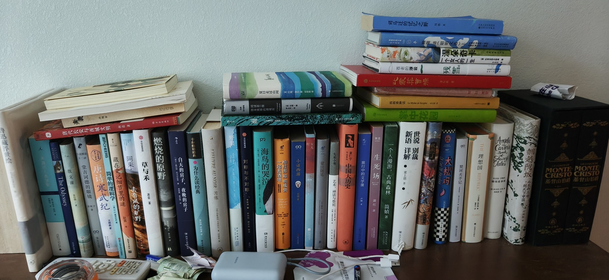

南房第一层

- CLASSIC STARTS The Odyssey
- 鲁迅藏浮世绘
- 唐代长安与西域文明 向达
- 散文课 说组读 十二讲 M公0一号
- 堂吉诃德的眼镜
- 唐诗寒武纪
- 湛声CHEERS 简单的逻辑学 BEZKOVER4 OK
- 王陵
- 藏在史记细节里的谜 赵
- 阿来 去有风的旷野
- 草与禾 波音
- 燃烧的原野
- 白天的房子，夜晚的房子
- 卡尔维谐经典 为什么读经典
- L'EUVREAUNOIR 苦炼
- 野果
- Therasv Nenry Sharid
- 对称与不对称 欢光临 每欢印 服份 大方
- 阅读是一座 ()营一 随身纳带的避难所 DEE-5
- 雨
- 夏日走过山间 罗约翰摩尔贝非外酒 4RMNEBM
- 海鸟的哭泣 湖南发风社
- p3 果麦 Angela eo eo Carters
- 一起去酒吧 柏拉图和鸭嘴兽
- 小话西游
- 米 蒙田随笔
- 大家小书 艺术、神话与祭祀
- 贵仁宇 作品系列 中国大历史
- 旅行中的文学课 C2
- 生死场 萧红
- 一个人漫游，古典森林 简娘著
- 司马迁的记忆之野
- 50520E SNKN 颐随讲（昭明
- Le Myshe de Sipphee
- 此蒙葬曹操
- 苍老的浮云 残雪 srs
- 新语 详解 董上德 人
- 掌中花园
- 世说 别裁
- 民国了
- 一个女人的一生
- 涅朵奇卡
- 大松鸡 057
- 契词夫手记
- 上国美
- H理想国 REPUBLIC
- 基督山伯爵
- Fairy Tales Book of
- 翻越陇坂 从东西互动 到天下中国
共 49 本书，上传于 2026-10-03 02:42:12。